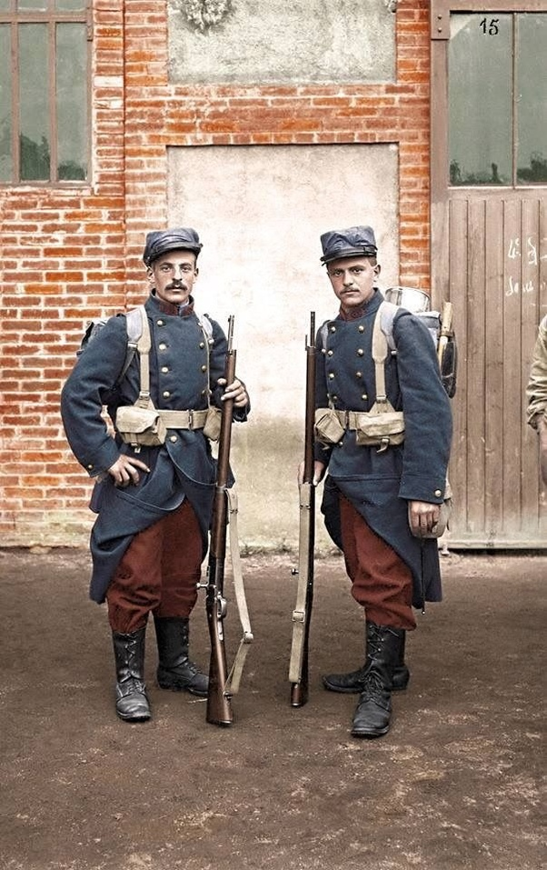
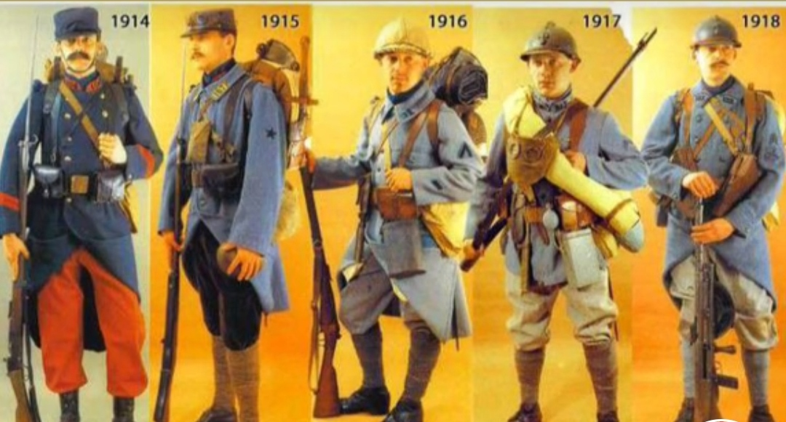

1910
A moda de 1910s e baseada tambem na belle Epoque porem com o incio da primeira Guerra a moda muda! já que em 1914 os paises Europeus entram em mais uma Grande guerra porem dessa fez seria a maior que eles já tivessem visto.
Moda Militar
A moda em geral não muda do seculo passado parra esse, exeto a moda militar
com o início da Primeira Guerra Mundial em 1914, a moda masculina teve que se adaptar às novas realidades da vida militar. Os trajes militares se tornaram proeminentes, não apenas como uniformes funcionais, mas também como uma influência na moda civil. O estilo militar trouxe elementos como epaulettes, botões duplos, bolsos utilitários e tecidos resistentes como gabardine e tweed para o cenário da moda masculina francesa.
a guerra também teve impacto na disponibilidade de materiais e na economia, levando a mudanças nas preferências e nos estilos. Tecidos mais simples e práticos foram favorecidos, enquanto acessórios e detalhes extravagantes foram temporariamente deixados de lado, tanto que notarmos com o passar da guerra os soldados vão tendo uniformes piores.